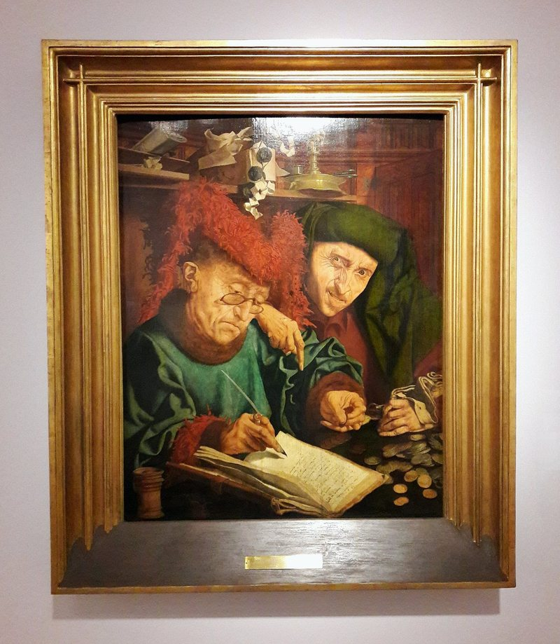
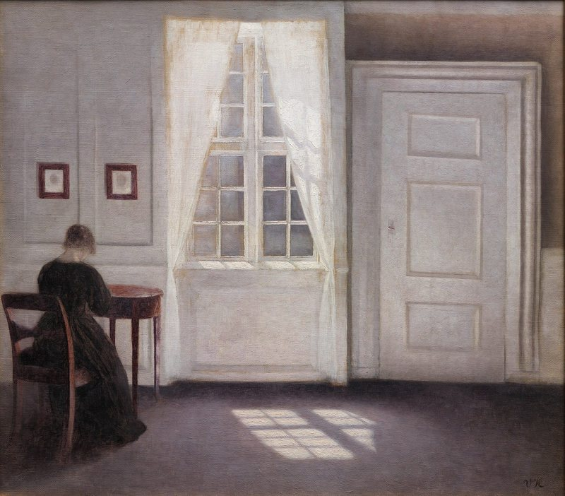
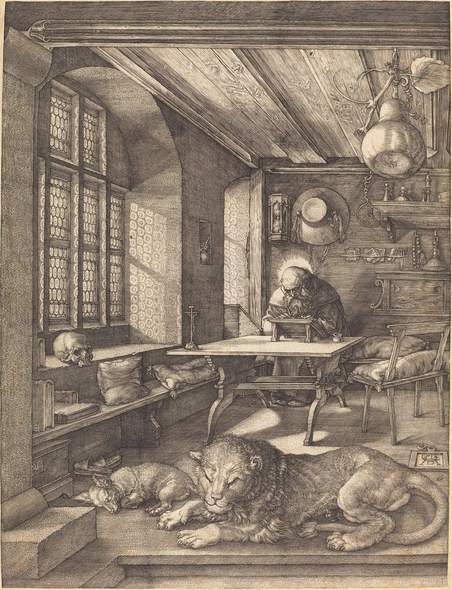

RSAS / Insights
Insights
Notes on the art market, written for collectors and clients rather than the trade.

Condition Reports: What They Cover and When You Need One
A condition report records the physical state of a work of art. It can reveal problems a photograph will never show, and it is one of the simplest ways to protect yourself before you buy.
Johannes Vermeer, Girl with a Pearl Earring, about 1665, oil on canvas. Public domain, via Mauritshuis, The Hague and Wikimedia Commons.
All articles
Insights for Collectors
Short, practical pieces on how the art market works: buying, selling, provenance, prices and what to ask. Twenty articles, each with a painting chosen to match.
What a Gallery Price Tells You, and What It Does Not
A gallery price is a carefully considered number. It is not a valuation, and the difference matters to anyone spending serious money on contemporary art.
Read the article
Reading an Auction Result: Estimates, Premiums and Unsold Lots
Auction results are the most public prices in the art market, and among the most frequently misread. Here is how to tell what a result actually says.
Read the article
Why an Artist's First Auction Appearance Matters
For an artist whose market has lived entirely in galleries, the first time a work comes up at auction is the first public test of its price. The result can shape that market for years.
Read the article
Spotting Hype: Warning Signs in an Emerging Artist's Market
Every emerging artist's market runs on a measure of belief. The trouble starts when belief is all there is. These are the signs that a market is being talked up faster than it is being built.
Read the article
Provenance: The Questions to Ask Before You Buy
Provenance is the documented history of a work of art. It protects you against fakes, stolen goods and disputed ownership, and it affects what the work will be worth when you come to sell.
Read the article
The Real Cost of Owning Art: Premiums, Insurance, Storage and Tax
The price of a work of art is only the beginning. Fees on the way in, care while you own it and costs on the way out can add a substantial sum to the true cost, and they are worth understanding before you buy.
Read the article
Selling a Work of Art: Auction, Private Sale or Consignment
There is more than one way to sell a work of art, and the right one depends on the work, the artist's market and what matters most to you. Here is how each route works, what it costs and where it can go wrong.
Read the article
Buying or Renting Art for a Hotel
Art shapes how guests remember a hotel. Whether to buy it or rent it is a commercial decision as much as an aesthetic one, and the right answer often involves a little of both.
Read the article
Briefing an Art Consultant: A Guide for Architects and Designers
A good art scheme starts with a good brief. This is a practical guide to what to include, when to bring a consultant in and how to keep the art aligned with the rest of the project.
Read the article
Artist's Resale Right Explained for Buyers
When a work by a living or recently deceased artist is resold through the art market, the artist or their heirs may be entitled to a royalty. Here is how the Artist's Resale Right works in the UK, what it costs and who pays.
Read the article
How We Research an Artist's Market Before Recommending a Work
A recommendation is only as good as the evidence behind it. This is how we assess an artist's market before we suggest a client buys, and why no single data point is ever enough.
Read the article
Primary and Secondary Markets: What the Difference Means for a Buyer
The same artist can be sold in two very different markets, with different prices, different rules and different risks. Knowing which one you are buying in changes the questions you should ask.
Read the article
Art Market Reports and Price Indices: How Much Weight to Give Them
Annual market reports and art price indices are widely quoted and rarely read closely. They describe the market as a whole. They say much less about any single artist or work.
Read the article
Editions, Prints and Multiples: How Edition Size Shapes Price
Prints and editioned works offer a way to own work by artists whose unique pieces may be out of reach. Their value depends on details that are easy to miss, starting with how many exist.
Read the article
Preparing a Work for Sale: Condition, Paperwork and Timing
The price a work achieves depends partly on decisions made before it ever reaches a buyer. Careful preparation can protect value. Poor preparation can cost far more than the effort it would have taken.
Read the articleWhen a Work Does Not Sell: What Happens Next
Not every work finds a buyer at the first attempt. An unsold work is not a disaster, but how you respond to it can affect its value for years. Here is what to understand and what to consider next.
Read the article
Gallery Representation: What It Signals About an Emerging Artist
For an emerging artist, the gallery that represents them shapes how their market develops. Understanding what representation involves helps a buyer read the signals and ask the right questions.
Read the article
Graduate Shows, Residencies and Prizes: Where New Talent Is Found
Before an artist has a gallery or an auction record, there are still signals to follow. Graduate shows, residencies and prizes are where much of the art world first notices new talent, and where our own research often begins.
Read the articleCondition Reports: What They Cover and When You Need One
A condition report records the physical state of a work of art. It can reveal problems a photograph will never show, and it is one of the simplest ways to protect yourself before you buy.
Read the article
Why Your Art Adviser Asks for Identification: Anti-Money Laundering in the Art Market
Buyers and sellers of art are increasingly asked to prove who they are and where their money comes from. These checks are a legal requirement in the UK, and they protect honest clients as much as they deter dishonest ones.
Read the articleNewsletter Sign-up
New Insights and occasional market notes by email, no more than once a month.
Every conversation is private.
Whether you are looking for a work or ready to part with one, we will arrange a viewing at a time and place that suits you.
Arrange a private viewinggallery@rsasltd.com